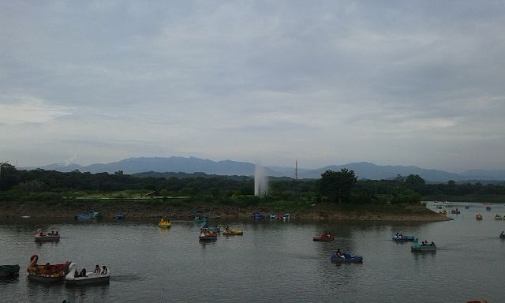

SUKHNA LAKE
Sukhna Lake in Chandigarh, India, is a reservoir at the foothills (Shivalik hills) of the Himalayas. This 3 km² rainfed lake was created in 1958 by damming the Sukhna Choe, a seasonal stream coming down from the Shivalik Hills. The lake was created by Le Corbusier and the Chief Engine L Verma. To preserve its tranquility, Corbusier insisted on two things: that it be forbidden for motor boats to circulate in the water, and for vehicular traffic to be prohibited on top of the dam (promenade). The lake is fringed by a golf course to the south, and Nek Chand's famous Rock Garden of Chandigarh to its west.
